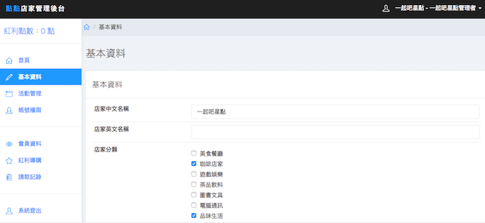

這是原圖（1171x537）
這是原圖，透過 CSS 縮圖（684x314），也就是你目前 WordPress 上用的方法。
這是我用 macOS 的預覽程式縮成 684x314 解析度（DPI）設為 300，直接放上來。
縮圖聽起來感覺就只是圖片縮小，但實際上在電腦圖學中縮圖是很深的學問。試著想像一下，1171x537 個點（pixel），要捨棄哪些點變成 684x314 點（pixel）後，字還會是清楚的？繪圖軟體在進行縮圖時，背後都有演算法來決定要捨棄掉哪些點，縮圖後品質還能維持。而直接用 CSS 縮圖的品質最差，因為它是硬縮。另外，記得沒錯的話，Photoshop 好像還能選擇用哪個演算法來縮圖？Wordpress 好像也有執行程式建立縮圖的功能。